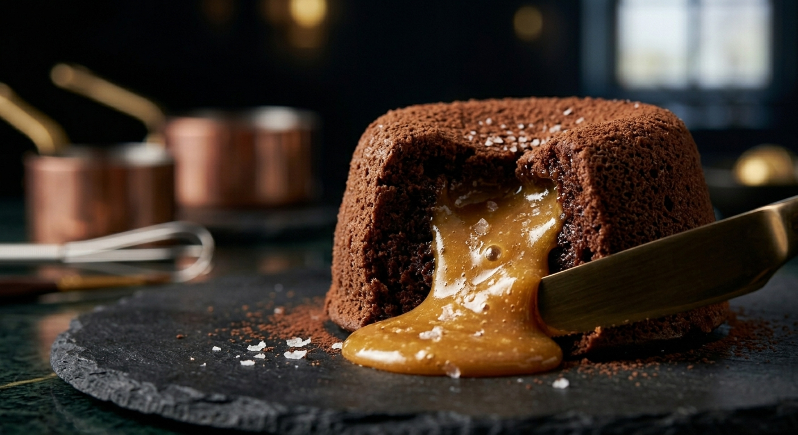

Home
Burger

Description
By the end of this recipe you will have a sweet recipe to take anywhere with you.
This recipe requires little preparation, but has an outcome of a delicous sweet
treat.
An individual chocolate cake with a firm, cakey exterior, with a warm, molten chocolate
center that oozes out when cut into. Best served fresh from the oven, dusted with
powdered sugar and paired with vanilla ice cream.
Ingredients
- Unsalted Butter
- Dark chocolate, chopped
- Large eggs
- Large egg yolks
- Granulated sugar
- All purpose flour, plus a little extra for dusting
- Pinch of salt
- Powdered sugar for dusting
Steps
- Preheat oven to 220 degrees celcius.
- Butter and lightly flour 2-4 ramekins
- Melt butter and chocolate together in a microwave, stirring until smooth.
- In a separate bowl, whisk eggs, egg yolks and sugar until pale and slightly thickened.
- Fold the melted chocolate mixture into the egg mixture.
- Gently fold the flour and salt in until just combined.
- Divide batter evenly amongst ramekins.
- Bake for 10-12 minutes, until the edges are set but the center still jiggles slightly.
- Let cool for 1 minute, then run a knife around the edge of the edge and invert onto a plate.
- Dust with powdered sugar and serve immediately while center is still molten.